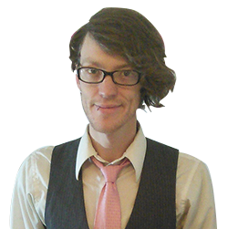

 Welcome to my little slice of job-seeking heaven. I’m a hybrid developer/designer in the Denver area looking for the right opportunity with a lovely group of individuals. I’ve got several years of experience under my belt working solo freelance, as well as on (very) small teams. My strengths are on the front-end of the web - I love taking gorgeous designs and slicing them into fully-functional web sites. I’ve also worked heavily with the WordPress CMS creating custom themes. Check out my portfolio to see the work I’ve done. You can even grab the source for this site and peruse away! If you think I might be a good fit for your team...
When I was in 8th grade, I got my very own computer from the local PC shop. In between games of Counter-strike, I fiddled around with Yahoo’s Geocities and made a couple web sites about Star Wars and other awesome stuff. I soon picked up paint shop pro and some very basic HTML. I registered a domain, got a cheap host with my parents’ credit card, and made a site to host homework assignments and notes. I ran it for a few months until my teachers told me to take it down. It seemed students began skipping class notes...slackers.
The rest is history! I worked in the retail industry for a long while before realizing that I could turn my hobby into something that might eventually support me financially and bring me much more joy than dealing with grumpy people in a check-out line. Over the years, I’ve developed my skills making web sites for family members, local organizations, friends, and my own personal projects. I’ve finally reached the point where I can do this for a living!
What I love about making web sites is the freedom and the expression. I can create a design that adheres to modern web standards while injecting my own flavor into the mix. I can work in my customized environment, tucked away in my own little world, create shortcuts that increase the efficiency of my work flow...all the while knowing I am doing something I actually enjoy. It’s a beautiful career; one I hadn’t even imagined was possible. I’m very thankful for the internet and the unique opportunity it has allowed me.
I am a lively chap with a chipper, cordial disposition. I believe in traversing life with a sense of humility and an open mind. In my spare time, you'll generally find me writing, watching films, or playing a computer game. I've taken to a minimal style, both in my creations and in my personal life - I appreciate simplicity and space.
Second to creating web sites, I very much enjoy psychology. I think humans are very interesting creatures; I'm an avid fan of emotions and their diverse forms of colorful display.
Janeway is my favorite captain, followed closely by Picard and Sisko. I'm a chili-cheese Frito fiend and I take my coffee #000.